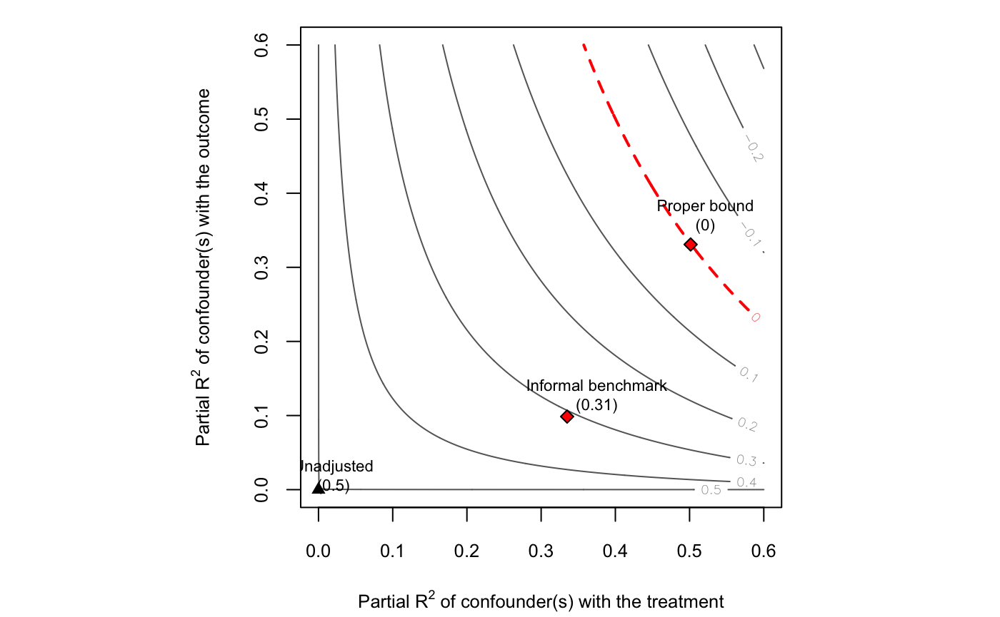

vignettes/informal_benchmarking.Rmd
informal_benchmarking.Rmdlibrary(sensemakr)
#> See details in:
#> Carlos Cinelli and Chad Hazlett (2020). Making Sense of Sensitivity: Extending Omitted Variable Bias. Journal of the Royal Statistical Society, Series B (Statistical Methodology).## First we need to simulate the data
# sets seed
set.seed(12345)
# simulates data
n <- 1e5
Z <- rnorm(n)
X <- rnorm(n)
Z <- resid(lm(Z ~ X)) # makes sure that Z is ortogonal to X
D <- X + Z + rnorm(n)
Y <- X + Z + rnorm(n)
# fits models
model.y <- lm(Y ~ D + X)
model.d <- lm(D ~ X)
# partial R2 of X
dof <- model.y$df.residual
r2yx.d <- partial_r2(model.y, covariates = "X")
r2dx <- partial_r2(model.d, covariates = "X")
# proper bounds
## compute real k
model.yz <- lm(Y ~ D + Z)
model.dz <- lm(D ~ Z)
## partial R2 of Z
r2yz.d <- partial_r2(model.yz, covariates = "Z")
r2dz <- partial_r2(model.dz, covariates = "Z")
## compute exact kd and ky (basically 1)
ky <- r2yz.d/r2yx.d
kd <- r2dz/r2dx
## compute formal bounds
formal_bound <- ovb_bounds(model.y, treatment = "D", benchmark_covariates = "X", kd = kd, ky = ky)
formal_bound$bound_label <- "Proper bound"
# contour plot
ovb_contour_plot(model.y, treatment = "D", lim = .6)
add_bound_to_contour(bounds = formal_bound,
bound_value = 0,
label.bump.y = 0.04)
add_bound_to_contour(r2dz.x = r2dx,
r2yz.dx = r2yx.d,
label.bump.x = 0.04,
label.bump.y = 0.03,
bound_value = adjusted_estimate(model.y,
treatment = "D",
r2dz.x = r2dx,
r2yz.dx = r2yx.d),
bound_label = "Informal benchmark")